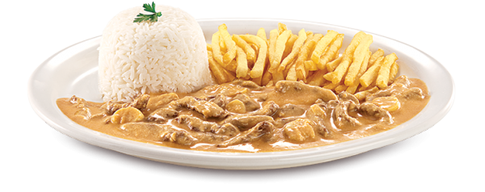

Livro de Receitas

Receitas
Strogonoff de Carne
Ingredientes
- 1 kg de carne de sua preferência, como patinho ou coxão mole
- 3 cebolas médias
- 1 vidro de champignon ou palmito
- sal e pimenta-do-reino a gosto
- 2 latas de creme de leite
- 3 tomates picados sem pele e sem sementes
- 3 colheres (sopa) de óleo de oliva
- 2 colheres (sopa) de ketchup
- 1 cubo de caldo de carne dissolvido em 100 ml de água
Modo de Preparo
O strogonoff, ou estrogonofe, provavelmente deve ser um dos primeiros pratos que você fez na cozinha — depois do frango grelhado, do purê e do macarrão ao molho de salsicha. Além de ser fácil de ser preparado, ele agrada a todos os gostos.
Para acompanhar esse strogonoff de carne simples e delicioso, você pode preparar arroz à grega, farofa, arroz de forno, purê de batata, batata gratinada ou uma simples e saborosa salada de maionese.
Agora que você já sabe como fazer strogonoff de carne, confira outras receitas com carne de frango: